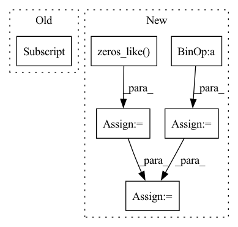

Pattern ID :35541
Before Change
step = state.get("step", 0)
exp_avg_sq = state.get("exp_avg_sq", torch.zeros_like(vector))
beta2 = param_group["betas"][1]
eps = param_group["eps"]
denom = torch.add(
torch.sqrt(torch.mean(beta2 * exp_avg_sq)), eps
) / math.sqrt(1 - beta2**step)After Change
beta1, beta2 = param_group["betas"]
eps = param_group["eps"]
last_grad = state.get("last_grad", torch.zeros_like(vector))
exp_avg = state.get("exp_avg", torch.zeros_like( vector) )
exp_avg_sq = state.get("exp_avg_sq", torch.zeros_like(vector))
exp_avg_old = (exp_avg - (1 - beta1) * last_grad) / beta1
exp_avg_sq_old = (
exp_avg_sq - (1 - beta2) * last_grad * last_grad
) / beta2
scale = (1 - beta1) * beta2 * exp_avg_sq_old - beta1 * (
1 - beta2
) * last_grad * exp_avg_old
scale /= (torch.sqrt(exp_avg_sq) + eps) ** 3
out = vector * scale * param_group["lr"]
outputs.append(out)
In pattern: SUPERPATTERN
Frequency: 4
Non-data size: 6
Instances Fragment ID: 101412098
Project Name: leopard-ai/betty
Commit Name: 831b8d6a8444a2c09aae0a7d37bb280b7b52ca55
Time: 2023-04-06
Author: sangkeuc@andrew.cmu.edu
File Name: betty/hypergradient/utils.py
M Class Name: AnonimousClass
N Class Name: AnonimousClass
M Method Name: precondition(2)
N Method Name: precondition(2)
M Parent Class:
N Parent Class:
M File Name: betty/hypergradient/utils.py
N File Name: betty/hypergradient/utils.py
M Start Line: 22
M End Line: 34
N Start Line: 21
N End Line: 41
Before Change
final_target_logit = torch.where(
target_logit > self.th, cos_theta_m, target_logit - self.mm
)
if cfg["USE_AMP"] == True and cfg["OPT_LEVEL"] == "O1":
final_target_logit = final_target_logit.half()
cos_theta.scatter_(1, label.view(-1, 1).long(), final_target_logit)
output = cos_theta * self.sAfter Change
kernel_norm = F.normalize(self.weight, dim=0)
cos_theta = torch.mm(embbedings, kernel_norm).clamp(-1, 1)
sin_theta = torch.sqrt(1.0 - torch.pow(cos_theta, 2))
cos_theta_m = cos_theta * self.cos_margin - sin_theta * self.sin_margin
// torch.where doesn"t support fp16 input
is_half = cos_theta.dtype == torch.float16
cos_theta_m = torch.where(
cos_theta > self.min_cos_theta, cos_theta_m, cos_theta.float() - self.m_am,
)
if is_half:
cos_theta_m = cos_theta_m.half()
index = torch.zeros_like( cos_theta)
index.scatter_(1, label.data.view(-1, 1), 1)
index = index.byte().bool()
output = cos_theta * 1.0
output[index] = cos_theta_m[index]
output *= self.s
return output
Fragment ID: 101412139
Project Name: cavalleria/cavaface
Commit Name: 98a21048f5dce435a6639a288dafc4c6be61be05
Time: 2021-08-25
Author: 605370459@qq.com
File Name: head/metrics.py
M Class Name: ArcFace
N Class Name: ArcFace
M Method Name: forward(3)
N Method Name: forward(3)
M Parent Class: nn.Module
N Parent Class: nn.Module
M File Name: head/metrics.py
N File Name: head/metrics.py
M Start Line: 81
M End Line: 103
N Start Line: 67
N End Line: 86
Before Change
major = torch.logical_and(
ddiag[:, 1] > ddiag[:, 0], ddiag[:, 1] > ddiag[:, 2]
) + 2 * torch.logical_and(ddiag[:, 2] > ddiag[:, 0], ddiag[:, 2] > ddiag[:, 1])
ret[near_pi] = self[near_pi, major]
ret[near_pi, major] -= cosine[near_pi]
ret[near_pi] *= (theta[near_pi] ** 2 / (1 - cosine[near_pi])).view(-1, 1)
ret[near_pi] /= ret[near_pi, major].sqrt().view(-1, 1)After Change
scale = torch.where(
small_theta, 1 + sine[not_near_pi] ** 2 / 6, theta[not_near_pi] / sine_nz
)
ret = torch.zeros_like( sine_axis)
ret[not_near_pi] = sine_axis[not_near_pi] * scale.view(-1, 1)
// // theta ~ pi
near_pi = ~not_near_pi
ddiag = torch.diagonal(self[near_pi], dim1=1, dim2=2)
// Find the index of major coloumns and diagonals
major = torch.logical_and(
ddiag[:, 1] > ddiag[:, 0], ddiag[:, 1] > ddiag[:, 2]
) + 2 * torch.logical_and(ddiag[:, 2] > ddiag[:, 0], ddiag[:, 2] > ddiag[:, 1])
sel_rows = self[near_pi, major]
aux = torch.ones(sel_rows.shape[0], dtype=torch.bool)
sel_rows[aux, major] -= cosine[near_pi]
ret[near_pi] = sel_rows * (theta[near_pi] ** 2 / (1 - cosine[near_pi])).view(
-1, 1
)
major_norm = ret[near_pi, major].sqrt().view(-1, 1)
ret[near_pi] /= major_norm
return ret
Fragment ID: 101411913
Project Name: facebookresearch/theseus
Commit Name: b9c19f66132e6609620a0275e973c2130cf7b4e1
Time: 2022-03-09
Author: 6612911+fantaosha@users.noreply.github.com
File Name: theseus/geometry/so3.py
M Class Name: SO3
N Class Name: SO3
M Method Name: _log_map_impl(1)
N Method Name: _log_map_impl(1)
M Parent Class: LieGroup
N Parent Class: LieGroup
M File Name: theseus/geometry/so3.py
N File Name: theseus/geometry/so3.py
M Start Line: 188
M End Line: 215
N Start Line: 188
N End Line: 220
Before Change
for i, mu in enumerate(self.client_us):
for param, params in zip(mu.parameters(), w_params):
wi = params[i]
sumA1 = 0
sumA2_mat = 0
for j, wj in enumerate(params):
if i != j:After Change
for i, mu in enumerate(self.client_us):
for param in mu.parameters():
param.data = torch.zeros_like( param.data)
coef = torch.zeros(self.num_clients)
for j, mw in enumerate(self.client_ws):
if i != j:
sub = (weights[i] - weights[j]).view(-1)
sub = torch.dot(sub, sub)
coef[j] = self.alphaK * self.e(sub)
coef[i] = 1 - torch.sum(coef)
for j, mw in enumerate(self.client_ws):
for param, param_j in zip(mu.parameters(), mw.parameters()):
param.data += coef[j] * param_j
def e(self, x):
return math.exp(-x/self.sigma)/self.sigma Fragment ID: 101412144
Project Name: tsingz0/pfl-non-iid
Commit Name: 9f3dd6c4ac5b7e8a15d07ef015eb8fd4f90beab3
Time: 2021-08-29
Author: 2719584131@qq.com
File Name: system/flcore/servers/serveramp.py
M Class Name: FedAMP
N Class Name: FedAMP
M Method Name: update_client_temp(1)
N Method Name: update_client_temp(1)
M Parent Class: Server
N Parent Class: Server
M File Name: system/flcore/servers/serveramp.py
N File Name: system/flcore/servers/serveramp.py
M Start Line: 92
M End Line: 111
N Start Line: 91
N End Line: 107